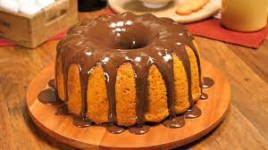
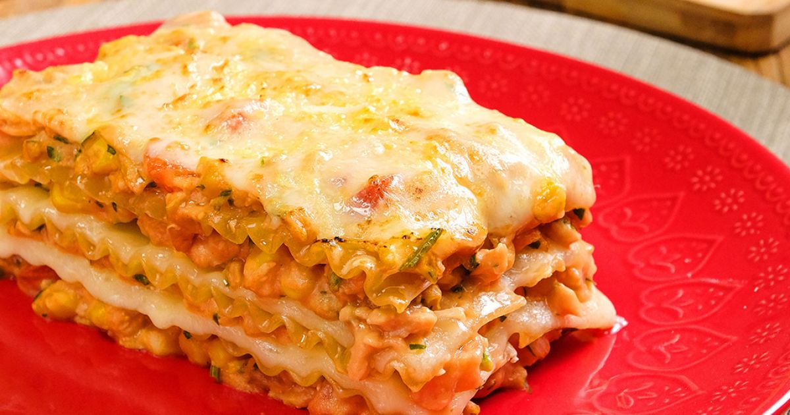

Receita de Bolo de Cenoura
- 3 cenouras médias raspadas e picadas
- 4 ovos
- 1 xícara de óleo
- 2 xícaras de açúcar
- 2 xícaras de farinha de trigo
- 1 colher (sopa) de fermento em pó
Modo de preparo
- Pré-aqueça o forno a 180°C.
- No liquidificador, bata as cenouras, os ovos e o óleo até obter uma mistura homogênea.
- Em uma tigela, misture o açúcar e a farinha de trigo. Adicione a mistura do liquidificador e misture bem.
- Adicione o fermento em pó e misture delicadamente.
- Despeje a massa em uma forma untada e enfarinhada.
- Leve ao forno por cerca de 35-40 minutos, ou até que um palito inserido no centro do bolo saia limpo.
- Retire do forno e deixe esfriar antes de servir.

Receita de Lasanha de Frango
- 500g de massa de lasanha pré-cozida
- 1kg de peito de frango cozido e desfiado
- 1 cebola picada
- 2 dentes de alho picados
- 1 lata de molho de tomate
- 2 caixas de creme de leite
- 2 xícaras de queijo mussarela ralado
- Sal e pimenta-do-reino a gosto
Modo de preparo
- Em uma panela, refogue a cebola e o alho no azeite até ficarem dourados. Acrescente o frango desfiado e refogue por mais alguns minutos.
- Adicione o molho de tomate e tempere com sal e pimenta a gosto. Deixe cozinhar por cerca de 10 minutos.
- Em outra panela, aqueça o creme de leite e misture metade do queijo ralado. Mexa até que o queijo esteja completamente derretido.
- Em uma travessa, coloque uma camada de massa de lasanha, seguida de uma camada de frango refogado e uma camada do creme de leite com queijo.
- Repita as camadas até acabarem os ingredientes, sendo que a última camada deve ser de queijo ralado.
- Cubra a travessa com papel alumínio e leve ao forno preaquecido a 200°C por cerca de 20 minutos. Retire o papel alumínio e deixe gratinar por mais 10 minutos.
Receita de Brigadeiro
- 1 lata de leite condensado
- 4 colheres (sopa) de achocolatado em pó
- 1 colher (sopa) de manteiga
- Granulado para decorar
Modo de preparo
- Em uma panela, adicione o leite condensado, o achocolatado em pó e a manteiga.
- Leve ao fogo baixo e mexa sem parar até obter uma mistura homogênea e que comece a soltar do fundo da panela (cerca de 10-15 minutos).
- Desligue o fogo e deixe esfriar um pouco antes de moldar as bolinhas de brigadeiro.
- Com as mãos levemente untadas com manteiga, pegue pequenas porções da mistura e molde bolinhas.
- Passe as bolinhas de brigadeiro no granulado e coloque em forminhas de papel.
- Leve à geladeira por cerca de 30 minutos antes de servir.